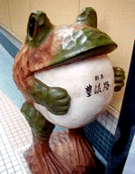
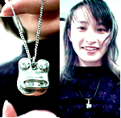
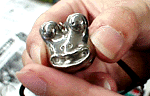

|
 大分に謎のタヌキ腹カエル！【大分発=スミちゃん様】おはようございます。仕事で大分にいます。まだまだ友達がいないので、かなしー、さみしー、と思いつつ、街を歩いていると、タヌキのような堂々としたお腹をつきだしたカエルを発見！なんだか元気になってきました。発見場所は、大分のガレリア竹町の商店街です。お腹に、『割烹、豊後路』と書いてありました。なんか可愛い！
【全国かえる奉賛会】そうだあ。元気がないときは、カエルを見るとほっとするよね。大王様も、しょげているときに、カエルを見つめて元気になるのさああ。タヌキカエルは、木製なのかなー
カエルアクセサリーで愛を射止めよ！ 【全国かえる奉賛会】いやー来月は、クリスマスの１２月だ。結婚式とともに、仏教徒の日本人が、『恋愛を演出する舞台装置として、活用させていだたいている異教徒の祭り』だが、この頃は、女性に光り物を貢ぐ例が増えているなーっ。しかし、当たり前の指輪やアクセサリーでは、愛を打ち明ける迫力に欠ける！悩んでいたら、今年のクリスマスプレゼントにうってつけの、豪華で素晴らしいアクセサリーが登場した。 さあああ。大王様も、イマスグに買いに走って、１５年間片思いの彼女に、モローアクセサリーをプレゼントするぞ。今年はカエルのモロー君をキューピットに、激しく愛を告白するぞおおおおおおっ！！
 【東京発=寺井モロー父同志記者】さて、第二回分譲の発送も終了し、やっと一息ついております。御購入のみなさまから御感想いただければ幸いです。メンテナンスや修理に関してはお気軽に御質問ください。さて、今週は福岡のかえるショップリビットリビットにてアクセサリーを試験販売！モローは今度はピカピカの光沢仕上げでこれもなかなかいいですよ！今週中には弟子りょーこ嬢がショップに持ち込み。しかし店長結構休み多いから開いてるかな？４点ほどしかないので興味のある人はのぞいてみて下さい！ペンダントとチョーカー。おたのしみに。遠方のかたで欲しい人がいれば通販も検討します。
文庫買って弟子ガエル貰おう？【日本発=伊藤正勝同志記者】近所の書店で特に何を読みたいでもなく文庫本のコーナーを覗いてみたら光文社文庫創刊１５周年フェアというのをやっていました。以下、（ ）内は文庫本についているオビの文面より引用しました。 （２冊買って、みんなでもらおう「創刊１５周年フェア」のオビがついている光文社文庫を２冊買うと、カッパ先生謹製携帯ストラップがもれなく当たります。） 締め切りは１１月１５日です。急ぎましょう。尚、この携帯ストラップはの３つのうちいずれか一つという事で必ず弟子ガエルが当たるとは限らない事に注意して下さい。私は、読書意欲も無いのに早速４冊も文庫を購入してしまいました。読破するのが先か、ストラップが届くのが先か、楽しみです。 【全国かえる奉賛会】弟子ガエルってなんでしょう。とっても気になります。大王は戦記物が好きなので、光人社は、よく買うのだが、今後は、読みたくない本でも弟子ガエルが当たるまで光文社文庫を買うぞーっ！誰か弟子ガエルをゲットしたら画像をクレーっ！ ゲームのカエル賞品続々！【日本発=近藤KAERU＠KAERU STREET同志記者】最近発売された「かえるの絵本」ってプレイステーションのゲームやってます。応募券をはったアンケートハガキを返送すると、抽選で1000名に「かえるのぬいぐるみ」がもらえるようなので、ぜひゲットしたいところですね。へやに帰ってくるとカエルがいたりして、なんだがにはホッとするゲームです。内容は育成型ファンタジーRPG。カエルファンにはオススメです。ちなみに、わたしはまだレベル３です（笑）【日本発=kei-f同志記者】ゲームソフト『かえるの絵本』が現在キャンペーン「連れて『かえる』キャンペーン！！」の特製縫いぐるみは、蕗の葉を右手に持ち、ちょこんと座っている姿はカエラーならずとも思わずかわいいと口に出てしまいそうな愛らしいさです!! その姿はここからみることができます！！ ファイナルファンタジーシリーズでおなじみのスクェアからカエルフィギュアが発売されます!!正式名称は『メタルキャストトード』。スクェアのカエルキャラトードがメタリックな立像になってます!なかなか趣のある姿で渋めな印象を受けます!!スクェアのページはGoodsのページからどうぞ!お値段は2,400円です。
アリー・My・ラブ２カエルの画像発見！【日本発=kei-f同志記者】『アリー・My・ラブ２』に出演のカエルのステファンの画像を見つけました。机の上に盆栽のような基地があり、そこに住んでいるそうです。７７７７７人目に記念品贈呈！【全国かえる奉賛会】もうじきカエルカウンタが７７７７７になります。ちょうどの訪問者には記念品をプレセントします。幸運なカエル訪問者は、大王様へのメールで自己申告してちょー！投稿採用者に武功カエル徽章を授与！ |
かえる古新聞過去に取り上げた記事を見出し付きで一覧したい人は、ここをクリック◆創刊号を見る◆先週号を見る◆話題の号を見る◆かえる新聞の昔を読む
|
私も入っています。。全国かえる奉賛会
大王様に会うには、このバナーをクリック。ずっと奥に写真館があるぞ。全国かえる奉賛会に入会するには、自分のホームページのどこかに、下の部分を追加するとバナーがリンク付きで表示されるぞ。どんどん入会しましょー |


|